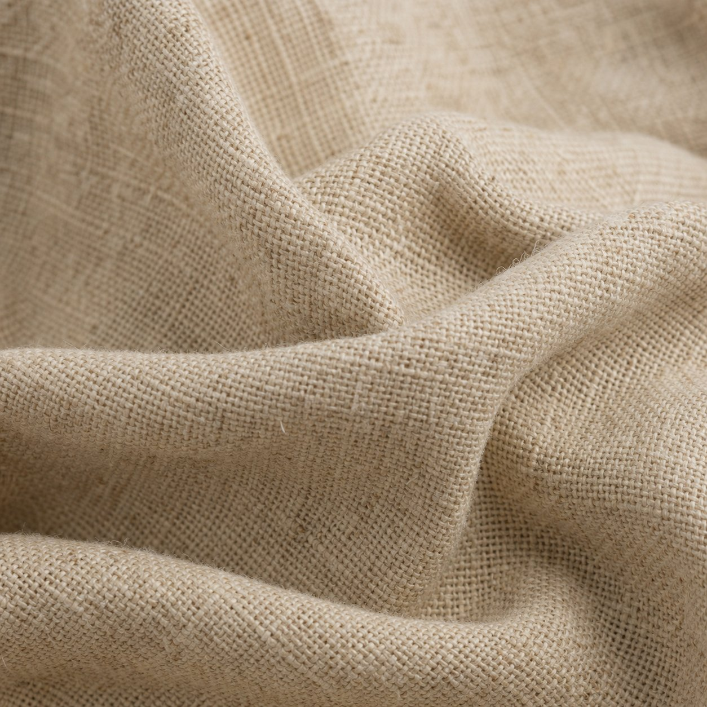
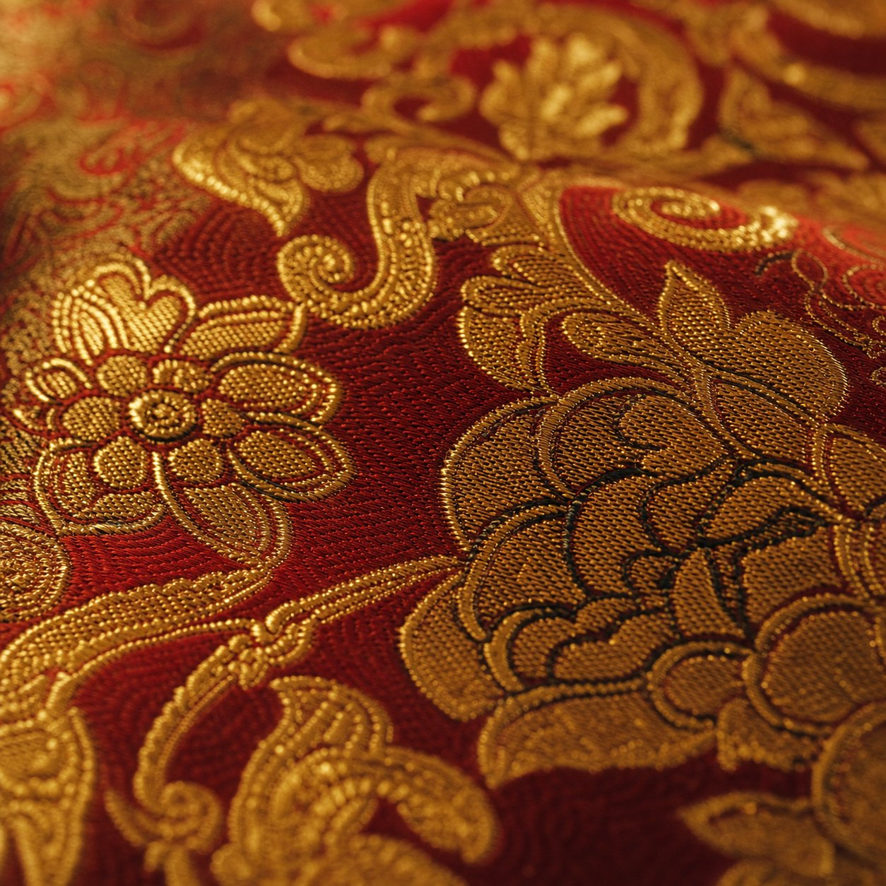
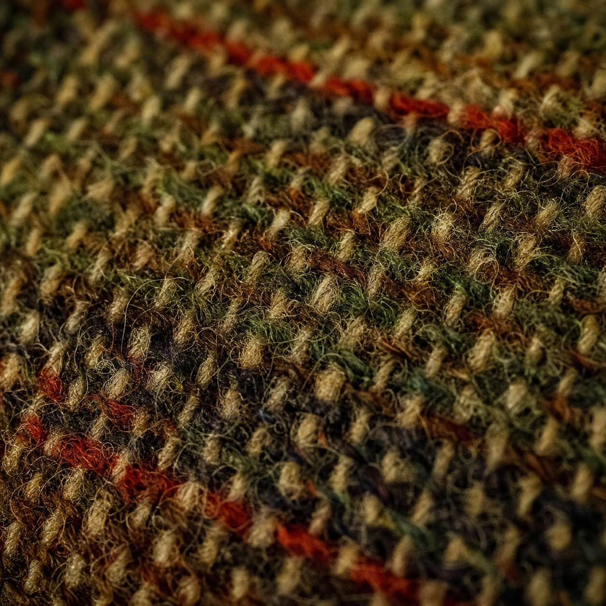
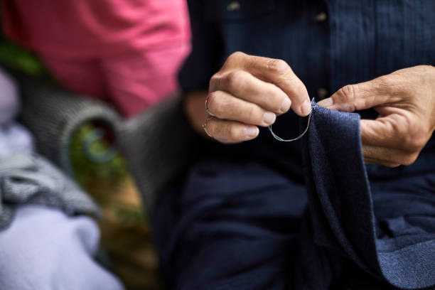
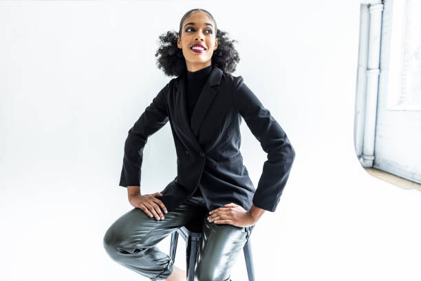
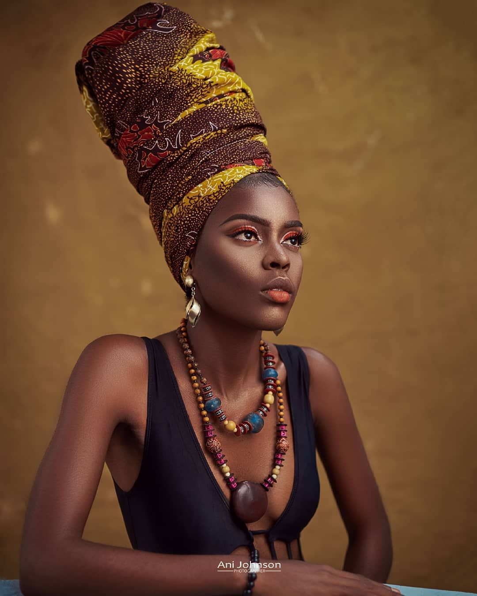
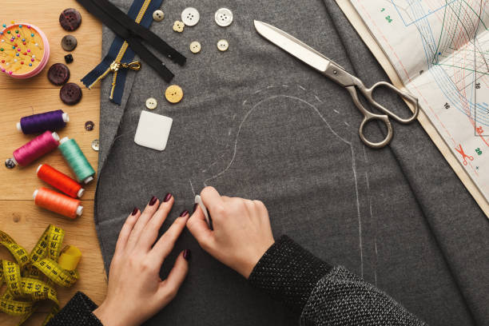

swatch-silk.jpg
Deep ivory silk • Velvia 80 • macro
swatch-velvet.jpg
Crushed burgundy velvet

swatch-linen.jpg
Warm oatmeal Belgian linen
swatch-chiffon.jpg
Blush pink silk chiffon • backlit

texture-silk.jpg
Habotai silk • warm champagne

texture-velvet.jpg
Silk velvet • deep emerald

texture-linen.jpg
Belgian linen • warm flax

texture-chiffon.jpg
Silk chiffon • soft ivory

texture-brocade.jpg
Gold brocade • deep red

texture-wool.jpg
Harris Tweed • earthy heritage

filmstrip-01.jpg — “The Silk Road”
Woman weaving silk at handloom, Thailand — stand-in for silk workshop China. Warm natural light.

filmstrip-02.jpg — “Threads”
Hands stitching seam — intimate craft close-up. Ready to reshoot AI: needle pulling red thread through wool.

filmstrip-03.jpg — “The Wardrobe”
Outlander costume department archive — period costumes organized by era. Perfect wardrobe room match.

filmstrip-04.jpg — “Period Piece”
Bridgerton — Regency gown, mirror reflection dressing room. Meta-cinematic, then & now.

portrait.jpg
Costume workshop portrait — Black female designer, dress form behind, atelier lighting. Senior — best workshop match.

portrait-alt-young.jpg
Alt: Nigerian-British, late 30s age-accurate, fashion studio. White backdrop — needs workshop composite.

portrait-alt-nigerian.jpg
Alt: Editorial Nigerian portrait, Ani Johnson — beautiful, glam. Great for hero press.

about-bg.jpg
Top-down cutting table — scissors, chalk, pattern, thread spools, hands marking fabric. Tactile creative chaos.